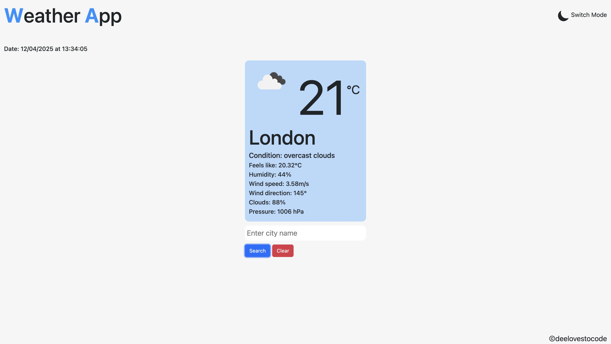
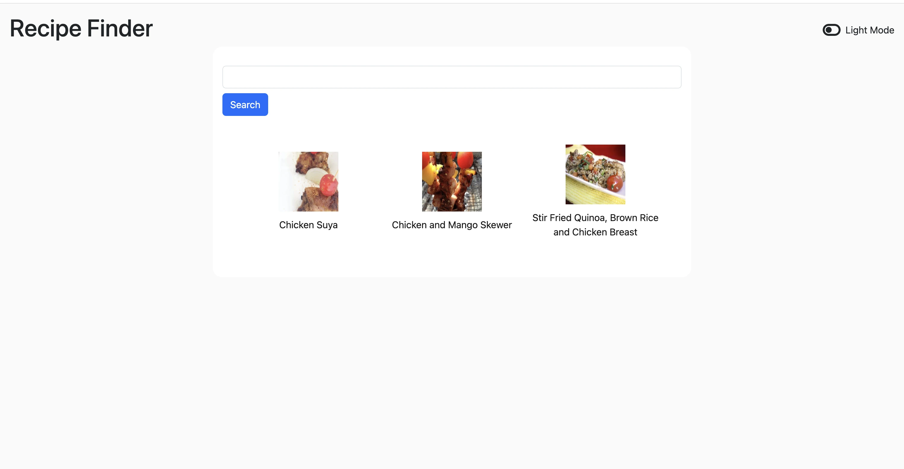

My Journey into Programming: From ICU Nurse to Tech Enthusiast
April 09, 2025

My journey into programming began on November 17, 2024. By profession, I’m a registered nurse, and I’ve worked in various specialties. Currently, I’m an ICU nurse and also pursuing my master’s degree in advanced practice nursing. I absolutely love my work—caring for critically ill patients and striving to provide the best nursing care I can. However, I’ve also been fascinated by how technology is transforming healthcare delivery, and I want to be part of that change.
Although I’ve only been on this programming journey for less than 5 months, I’ve already taught myself the fundamentals of HTML, CSS, JavaScript, and am now diving into React. Using these technologies, I’ve created static webpages and several small apps, all of which you can explore on my portfolio page.
The path has definitely come with its challenges. Balancing a 12-hour shift, coupled with 3-hour daily commutes, hasn’t been easy. But despite the exhaustion, I’ve managed to stay motivated and push through. I’m not trying to pat myself on the back, but I’m proud of the effort I’ve put in so far.
I’ve started this blog to document my journey—both the highs and the lows. I plan to write about the technologies I’ve studied, the projects I’ve worked on, and the lessons I’ve learned along the way. This blog will serve as a record of my progress and a way to reflect on how far I’ve come.
If you happen to come across my website or blog, I’d love to hear your thoughts. Please feel free to email me any suggestions, tips, or advice on how to make this journey smoother. I’d really appreciate it.
NextCoding Challenge Day 2: Building a weather app with react + typescript.
April 10, 2025

Today has been a successful day for me, and I hope the same for you! It's Day 2 of #100DaysOfCode, and I’ve managed to develop a mini weather app. It's not deployed yet, but that's my goal for tomorrow. Aside from coding and developing my technical skills, I've also been focusing on improving my time management. I realized I could easily spend the whole day on my laptop, especially after eating and showering. I tend to avoid distractions like video games, which is a good thing, but I want to strike a better balance. I came across a concept called the 8-8-8 rule: 8 hours of work, 8 hours of sleep, and 8 hours of leisure with family or friends, or anything non-work related. I didn't fully implement it today, but it's something I'm working towards. Anyway, back to the weather app I built. I’ll share my key takeaways, challenges, reflections, and goals under the following headings:
learning point:
1. Axios & useEffect: Axios is a popular library in React used to fetch data, similar to the fetch API in vanilla JavaScript. I’ve used Axios before, so I’m familiar with how to fetch data and handle errors in the console. useEffect is a React hook used to manage side effects, like fetching data. Today, I managed to structure my app by creating a services folder with an api-client.ts and an apiKey.ts file. This modular approach helped keep things clean and organized.
2. AbortController: This was a new concept for me. The AbortController is used to cancel HTTP requests, which helps prevent unwanted re-renders or remounting due to React's strict implementation. I used it to signal the request cancellation once the data was fetched, making my app more efficient.
3. Weather Icons: Initially, I thought I’d just hardcode icons based on the weather type. But then, I realized I could use an array to store the icons and dynamically reference them using the index. This was a simple array iteration concept, but with React, I didn’t have to manually loop through as I would in vanilla JavaScript. Also, I learned how to use as keyof typeof for arrays, which helps avoid undefined errors when indexing.

Challenges:
I encountered some challenges fetching the data today, despite having worked with APIs before. Each API structure is different, so it took a bit of trial and error to map my data correctly. Some responses were arrays of objects, others were objects containing arrays and other objects. I quickly realized that logging the response in the console was essential for understanding the structure and ensuring I defined the correct props. It was a bit frustrating at times, but ultimately, I made it work, and that’s what matters.
Reflection:
Looking back, I would make sure to study the structure of the data before trying to fetch it, to better align my props with how the data is structured. There’s always room for improvement, but I’m proud of the progress I made today. One of the highlights was using React Hook Form and Bootstrap to create a dynamic input field, which allowed me to change the city in the weather app without hardcoding values. I had a similar experience while working on my expense tracker project, so it felt great to apply what I learned in one project to another seamlessly. To me, programming is all about taking an idea, explaining it clearly (even to yourself), and then implementing it with the right tools. If you can break it down, you can build it.
Goal:
My next goal is to deploy the weather app and refine it a bit before pushing it to GitHub Pages. I’m not focusing too much on UI/UX right now, but I’ll make sure to fine-tune it tomorrow before the deployment. I’ve also got my MSc project to consider, but for now, I’m staying motivated and pushing forward. No giving up!
Day 5 of 100 — Learning in Public & Shipping Projects
April 13, 2025
Hey folks! Day 5 of #100DaysOfCode is in the books, and I’m honestly loving the journey. It’s not
all been rosy — some bumps and moments of “wait, what?!” — but every hiccup has been a learning
opportunity.
Yesterday, I struggled a bit with implementing filters in my todo list. Today, I cracked it
thanks to ChatGPT (and some persistence). Turns out, it wasn’t that different from what I’d done
before in my expense tracker — I just didn’t connect the dots immediately. I'm still new, so it
happens!
No copy-pasting, just hands-on practice. I want to understand the logic so I don’t blank out
when trying to use it later. I usually practice during my commutes — bus rides are my classroom
these days — and it’s really helping solidify things.
Project Updates
Weather App ‚Äî Done & Deployed! I finally wrapped up my Weather App! üéâ I used axios to fetch data from a weather API, styled it to be responsive, and handled loading/error states. It was a great exercise in working with real-world data and building out something start-to-finish. Here‚Äôs a preview:  Updated Todo List ‚Äî Now with Filter Logic! I gave my Todo List App a facelift and added filtering functionality. You can now view all tasks, active tasks, or completed ones. Here‚Äôs the improved UI:
What I Learned:
Filtering Logic in React- Store your main array (in my case, todos[]) in state.
- Create a filter state (filter) to track the current view, e.g. 'all' | 'active' | 'completed'.
- Use that state to render only the relevant todos:
const displayTodos = todos.filter(todo => {
if (filter === 'active') return !todo.complete;
if (filter === 'completed') return todo.complete;
return true;
});
It sounds simple now, but it took a few tries before it really clicked. Definitely planning to practice this more.
Experimenting with the Spoonacular API
This week I also explored the Spoonacular Recipe API. Using axios, I was able to fetch recipe
data successfully. The API itself is easy to work with, but the free plan only allows 150
requests per day, which I maxed out yesterday — so I couldn’t finish everything I planned.
üòÖ
I’ll still go ahead and finish the UI and post a proper update once it’s ready. Here’s a sneak
peek of what I’ve built so far -
(images are from the free version — not the best quality, but
hey, it’s for learning, not commercial use!):

Reflection
Every step, no matter how small, counts. I’m proud of my progress — building real things,
learning from every bug, and staying consistent.
Next up: I’ll keep practicing filtering, dive deeper into Chart.js, and finish the
Spoonacular
UI when I get more API calls. I also have a 300-word research proposal to wrap up this week
(half done already), so it’s all about balancing my time well.
Goals for the Week
- Practice code during commutes and night breaks (on night shifts all week).
- Finish and polish the Spoonacular UI.
- Wrap up my research proposal before the 17th.
- Finish online learning modules that are about to expire.
- Weekly posts on LinkedIn/blog, daily log on Twitter.
- Maybe — just maybe — get bold enough to try a YouTube video in the future!
Documenting this journey has been so rewarding. I’ll keep showing up, sharing the process (wins and fails), and building one project at a time. Thanks for following along!
Days 6–13 of #100DaysOfCode: Building Through the Chaos (and Night Shifts)
April 22nd, 2025
Between juggling night shifts in the ICU and squeezing in code during bus rides and break rooms, these past 7 days have been a rollercoaster of wins, frustrations, and quiet resilience. From refining the UI in my weather app to unlocking TypeScript tricks and Chart.js mysteries, I’m learning to trust the slow burn of daily effort.
Here’s a breakdown of what I’ve been working on, what I’ve learned, and what’s next.
Highlights:
-
Recipe App:
Integrated Spoonacular API, added clickable images, implemented query parameters, and hosted
it live. Feedback from a friend led to a crucial UX improvement—clickable recipes!
-
Weather App:
Polished the UI, added dynamic recommendations based on real-time conditions using
OpenWeather API, experimented with SVGs, and tackled TypeScript errors. I even started
exploring design inspiration from Dribbble to make it pop.
-
Mini Projects:
- To-do list filters (finally nailed it!)
- Expense tracker enhancements with date tracking and local storage
- Chart.js exploration for future dashboards
-
New Tools & Skills:
- Google Analytics + Lighthouse for performance/SEO
- TypeScript’s Record & union types
- UX microinteractions and personalized suggestions
Key Lessons:
- Building every day, even for 20 minutes, adds up.
- TypeScript forces you to code with intention.
- Good UX often starts by asking, “What would I want as a user?”
- Consistency > intensity — especially when energy is low.
I had moments where I questioned everything—imposter syndrome hit, SVG icons broke post-deployment, and some goals didn’t get met. But I’m still here, still building, still learning.
What’s Next:
- Finish React course (game-fetching section)
- Get deeper into Chart.js with dynamic data
- Keep coding daily, even if it’s 30mins to an hour on busy days.